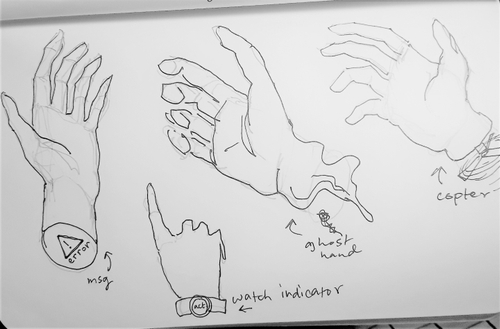
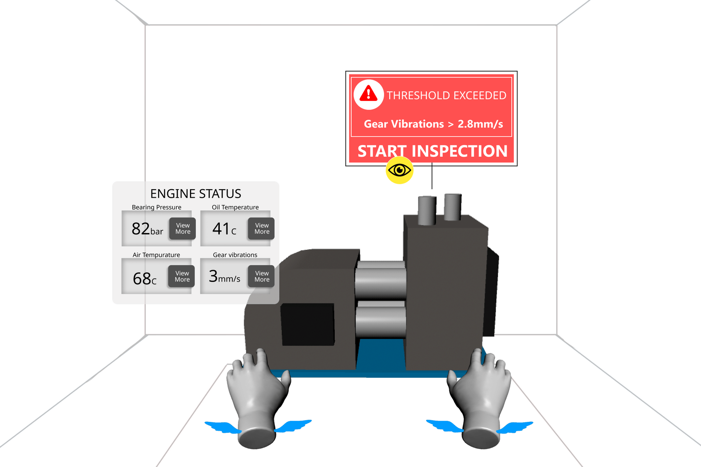

Freehand Assistant XR
Voice + gaze-controlled hand interactions for people with arm/hand disabilities

Problem & Opportunity
- Most XR systems assume intact hand/arm mobility (controllers or hand-tracking), excluding users with limb paralysis, amputations, or temporary injuries.
- Also relevant for situational constraints (e.g. hands busy) and enterprise workers who will rely on XR.
- Goal: Enable inclusive, usable XR interaction without requiring full hand function or specialized hardware.
Research & Insights
| Method | What I did | What I learned |
|---|---|---|
| Interviews | Spoke with 8 people from the disabled community and XR designers/devs. | Need for device-agnostic tools, plug-and-play usability; balance precision with natural feel; lack of feedback frustrates users. |
| Participatory Observation | Built rapid prototypes at hackathons (NYC, Futures NI / SideQuest). | Tracking errors and UI affordances affect usability; feedback loops critical for user trust. |
| Prototypes & Wireframes | Laser/gaze physical sim, Figma wireframes, "repair engine" task scenarios. | Voice + gaze combo must feel intuitive; icons and indicators offset lack of haptics; onboarding is essential. |
Feature & Interaction Design
- Voice commands: "Grab," "pick up" triggers manipulation; objects fly toward user when appropriate.
- Gaze-based pointing: Teleportation and movement based on gaze trajectory.
- Step-by-step training mode: Guided practice (e.g., engine-gear repair) before free use.
- Visual feedback: Icons and indicators provide clarity and confidence in absence of haptics.


Design Process
- Define users & scope: Focused on limb-hand disabilities and situational needs.
- Ideation & sketches: Explored gaze/voice combos and feedback indicators.
- Lo-fi prototypes: Figma wireframes and physical laser sim.
- User testing: Validated onboarding flow, teleportation, and training scenario.
- Feature prioritization: Used card sorting to identify recurring interactions.


Outcomes & Learnings
- Prioritize features early to avoid scope creep.
- Simulating real-world perception is key to intuitive XR interactions.
- Frequent VR prototyping uncovers friction points quickly.

Accessibility isn't a constraint—it's an opportunity to reimagine interaction and unlock unconventional capabilities.
What's Next
- Build a mid-fidelity prototype and validate through additional user testing.
- Expand beyond training to support daily tasks and creative workflows.
- Integrate NLP/ML for more natural voice recognition and adaptability.